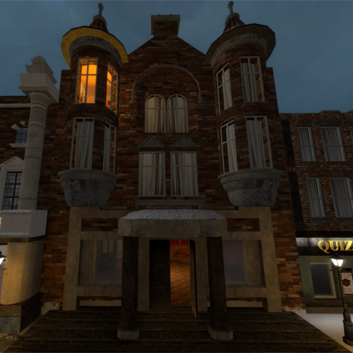
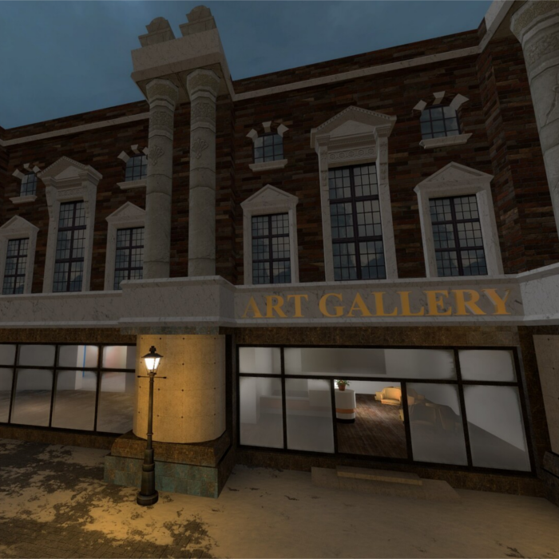
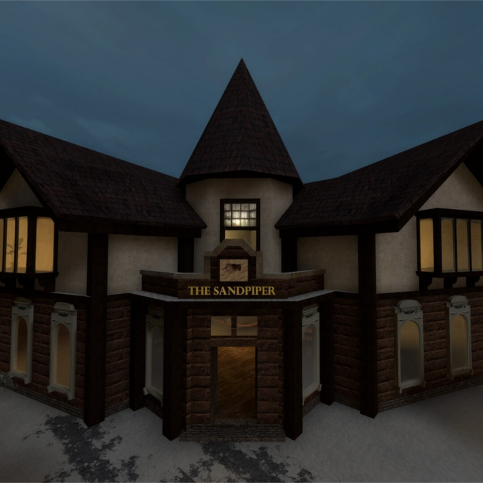
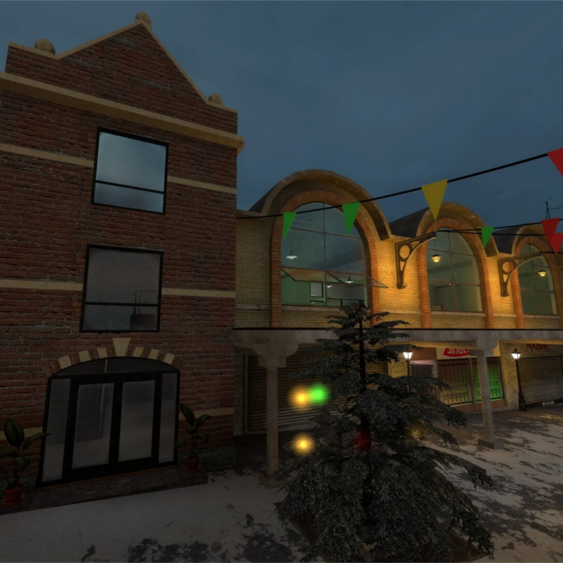

|  |
Town Hall
This is my 3D model of a town hall for a video game. I used architecture in and around Glasgow
for reference and ideas. The overall model is quite low poly (a couple thousand tris) despite
being somewhat detailed. You may notice this if you look more carefully at the curved features.
The straight edges that angle to other straight edges give away the square nature of the model. |
|  |
Art Gallery
The art gallery model was designed following the style of The Department Store building in
London. It's a very grand building but using simple loop cuts and extruding, the actual
model itself was easy. The texturing however was the difficult part. I opted for using real
photography of window ornamentation and projected the texture onto the thesurface of the model.
|
|  |
The Sandpiper Inn
A lovely friend of mine uses her bafflingly awesome Python skills to create a Discord bot that
can do just about anything. This bot is named 'Sandpiper'. In her honour I have made a lovely
pub in a video game and given it her names sake. This pub is interesting due to the fact I
modelled it entirely in the Source Engine. A most terrible achievement. The lower windows are
3D models I made, using the same projection technique mentioned earlier.
|
| 
| Office Building
The office builing here uses more in-engine modelling due to how these areas inside are entirely
playable areas of the map. The building on the left houses a stairway up to the office building
and is loosely based on the King William House in Bristol. The office building itself was
designed to invoke a slight industrial feel to represent the types of buildings you may see in
Liverpool.
|